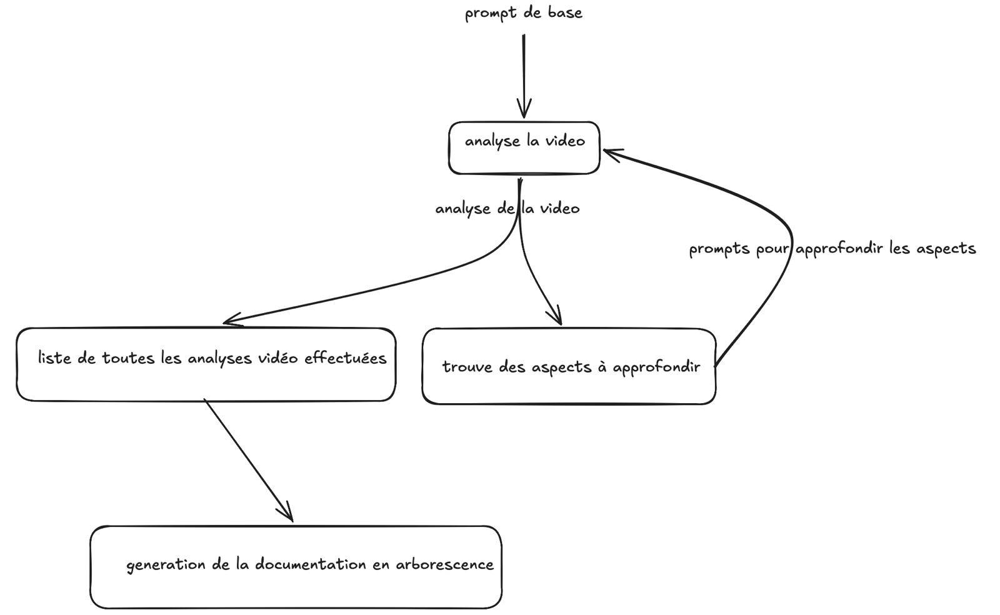

Voodoo × Unaite × Anthropic — avril 2026
N7·42
Track 2
vidéo gameplay → playable ad
- Antoine Monot
- Sami Ennedoui
- Kseniia Osipova
- Alexis Briend
- Bo Sébastien
01 — Démo en ligne · 02 — Phase 1 · Antoine
De la vidéo à l'arborescence documentaire

in
Videos/B01.mp4out
game_spec.md + arborescence de fiches .mdpipeline_agentic.py — Gemini 2.5 Pro · branching récursif, parallélisé03 — Phase 2 · Sami + Alexis
Du game_spec.md au playable single-file
00mission
01skim & validate
02asset anchor
03asset fanout
04implementation
05playwright loop
06bundle & deliver
Technique d'itération — un asset = un sous-agent
repéré
« Le projectile ennemi est un corbeau qui plonge en sinusoïdale »
fanout
1 sous-agent dédié corbeau : sprite, animation, trajectoire, SFX cawing, trail
merge
livre
scene_exterior/raven.js + raven_flock.js isolés, plug-and-play
Granularité par asset signifiant, pas par couche technique.
MVP livré en 6 h 45 · premier prompt → commit avec musique
04 — Phase 3 · Pipeline d'itérations
Itérer en parallèle, comparer côte à côte
Main
brainstorm 30+ idées hors-genre · triage assets · arbitrage
Variables ×n
un sous-agent par axe unique · sous-branche · single-file build
Reviewer
vérifie axe respecté · pas de régression boucle · pass / fail
hookmechanicpalettenarrativeendcard
Décision pragmatique · drop Gemini scoring · pas de skill bloat
live · côte à côte
V4 · level-preview
V3 · y2k-neon
V2 · combo-meter
axes palette & mechanic · post-FX · combo x1→x5 + crit feedback
Merci.
Vidéo & assets fournis
- Voodoo — vidéo source
B01.mp4(Castle Clashers) - Voodoo — pack
Castle Clashers Assets(PSB, PNG, OGG)
Assets tiers
- Kenney.nl — hand cursor sprite (CC0)
- Scenario.com — assets génératifs via MCP
- htdemucs_ft — séparation stems audio (musique & voix)
Modèles & outils
- Anthropic Claude — Opus 4.7, Sonnet 4.6, Claude Code
- Google Gemini 2.5 Pro — analyse vidéo multimodale
- esbuild · Playwright · Three.js — bundling, capture, rendu
Hosts & orga
- Voodoo · Unaite · Anthropic — hackathon avril 2026
- itch.io — hosting démo publique
N7.42 — Antoine · Sami · Kseniia · Alexis · Sébastien